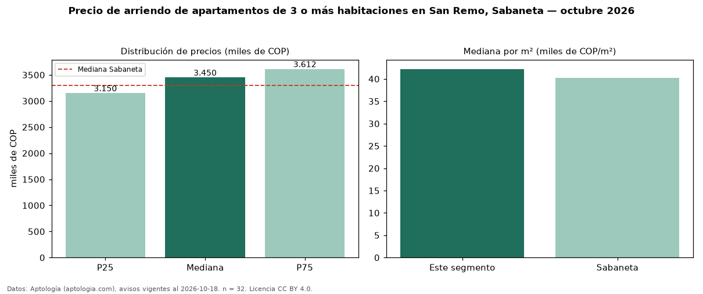

Precio de arriendo de apartamentos de 3 o más habitaciones en San Remo, Sabaneta — octubre 2026
COP 3,45 millones al mes es el canon mediano de apartamentos de 3 o más habitaciones en arriendo en San Remo, Sabaneta (n = 32 avisos). Prácticamente coincide con la mediana de Sabaneta para apartamentos de 3 o más habitaciones (COP 3,30 millones). Por metro cuadrado, la mediana es COP 42.221/m² al mes (n = 32 avisos con área), 5 % por encima de Sabaneta (COP 40.244/m²). Son 78 % de los 41 avisos de apartamentos en arriendo de la zona, cuya mediana general es COP 3,30 millones (+5 %). Con el precio por m² de venta del mismo segmento (COP 7,22 millones/m²), la rentabilidad bruta implícita es 7,0 % anual (aproximación con medianas de ofertas distintas). El área mediana anunciada es 77 m². El estrato más frecuente es 4 (100 % de los avisos con estrato). La mitad central de los avisos va de COP 3,15 millones a COP 3,61 millones (razón 1,1), una dispersión baja. Datos: Aptología (aptologia.com), CC BY 4.0 — https://www.aptologia.com/arriendo/sabaneta/san-remo. Archivos: PDF, CSV con las cifras y gráfica PNG.

| Avisos únicos | 32 |
|---|---|
| Percentil 25 | COP 3.150.000 |
| Mediana | COP 3.450.000 |
| Percentil 75 | COP 3.612.500 |
| Mediana por m² | COP 42.220 |
Fuente: avisos vigentes de portales inmobiliarios recopilados por Aptología, deduplicados (mínimo 30 avisos únicos por celda). Precios pedidos, no cerrados. Fecha: 2026-10-18.